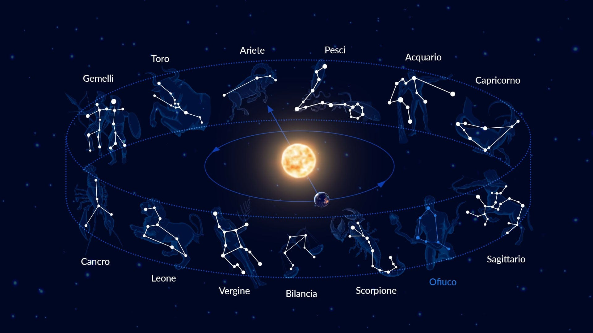
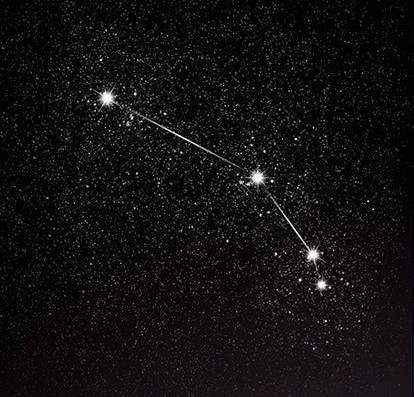
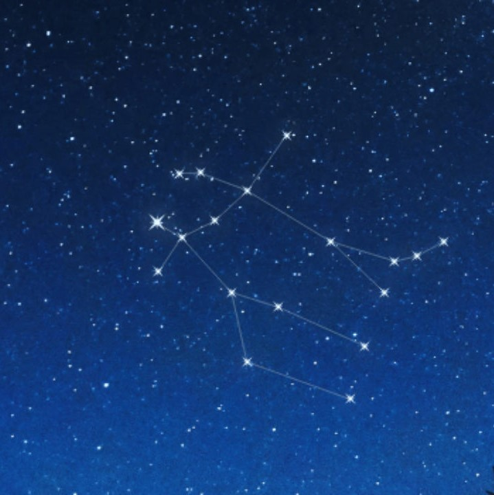
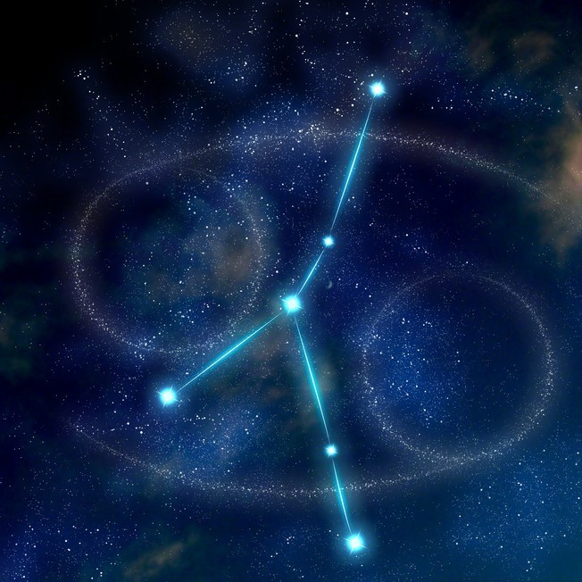
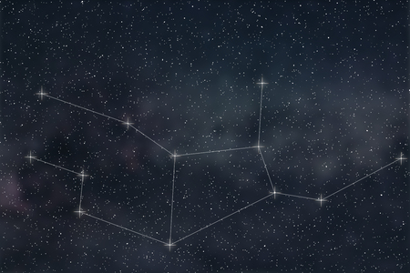
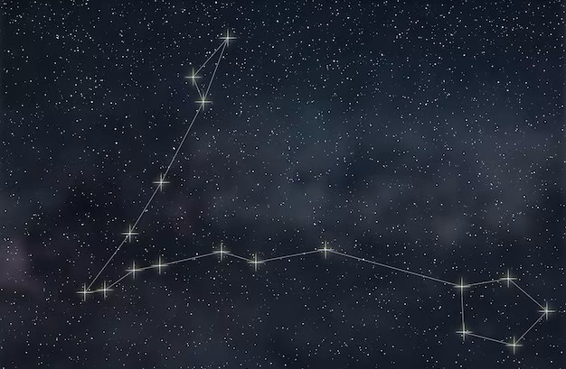

COSTELLAZIONE

Le costellazioni sono gruppi di stelle che sembrano formare figure o pattern riconoscibili nell'immensità del cielo notturno. Da tempi antichi, le persone hanno dato nomi e significati a queste configurazioni stellari, creando un ricco patrimonio di miti e leggende legate al firmamento.
Le costellazioni sono spesso utilizzate come punti di riferimento per la navigazione e come strumenti per tracciare il tempo e le stagioni. Esse sono suddivise in diverse famiglie, come le costellazioni zodiacali, che si trovano lungo l'eclittica e sono associate ai segni astrologici, e le costellazioni boreali e australi, visibili rispettivamente nell'emisfero settentrionale e meridionale.
Ogni cultura ha le sue costellazioni distintive e le proprie storie legate ad esse. Ad esempio, la costellazione dell'Orsa Maggiore è stata utilizzata come punto di riferimento dai navigatori antichi, mentre la costellazione di Orione è una delle più riconoscibili nel cielo notturno e ha ispirato miti e leggende in molte culture.
TELESCOPIO

Ariete è il primo segno zodiacale secondo l'astrologia occidentale e è associato al periodo tra il 21 marzo e il 19 aprile. Simboleggia il principio della nascita e dell'inizio, poiché cade all'inizio della primavera nell'emisfero settentrionale. Il simbolo di Ariete è l'ariete, un animale coraggioso, impulsivo e determinato, che riflette le caratteristiche di coloro nati sotto questo segno.
Le persone nate sotto il segno di Ariete sono spesso considerate coraggiose, dinamiche e piene di energia. Sono guidate dall'impulso e dalla passione, e amano intraprendere nuove sfide e avventure. Possono essere assertivi e decisi nelle loro azioni, ma talvolta possono anche essere impulsivi e impazienti.
A livello astronomico, Ariete è una delle costellazioni dello zodiaco più antiche conosciute, situata nell'emisfero celeste settentrionale. Tuttavia, la sua forma di ariete non è facilmente riconoscibile nelle stelle, ed è più nota per la sua stella principale, chiamata Alfa Arietis o stella di Ariete. Ariete è situato tra i Pesci a ovest e il Toro a est.
Il Toro, o Taurus in latino, è il secondo segno zodiacale all'interno dell'astrologia occidentale. Questo segno è associato al periodo tra il 20 aprile e il 20 maggio, e la sua simbologia principale è il toro, un animale noto per la sua forza, determinazione e stabilità.
Le persone nate sotto il segno del Toro sono spesso descritte come pazienti, affidabili e pratiche. Posseggono una grande determinazione e una forte volontà, che li rende capaci di raggiungere i loro obiettivi con tenacia e perseveranza. Tuttavia, possono anche essere testardi e possessivi, attaccati alle loro convinzioni e ai loro beni materiali.
Il pianeta dominante del Toro è Venere, il pianeta dell'amore, della bellezza e del piacere. Questo conferisce alle persone del Toro un'apprezzamento per l'arte, la musica, il lusso e il comfort. Sono spesso attratti dalle cose belle della vita e cercano armonia e stabilità nelle loro relazioni personali.

Gemini, noto anche come i Gemelli, è uno dei dodici segni zodiacali e rappresenta i gemelli Castore e Polluce nella mitologia greca. È associato al periodo tra il 21 maggio e il 20 giugno nel sistema astrologico occidentale. Le persone nate sotto il segno dei Gemelli sono spesso descritte come vivaci, intelligenti, adattabili e comunicative.
Il simbolo dei Gemelli sono due gemelli o due figure umane, a volte rappresentate abbracciate, altre volte separate. Questo simbolo riflette la dualità e la versatilità del segno, suggerendo una personalità che può avere molteplici interessi e sfaccettature. I gemelli Castore e Polluce erano considerati fratelli molto uniti nella mitologia greca, ma con personalità differenti, il che si riflette anche nei gemelli del segno zodiacale.
Gli individui nati sotto il segno dei Gemelli sono noti per essere sociali e amanti della conversazione. Possono essere estroversi, intelligenti e curiosi, con una grande capacità di adattamento a diverse situazioni e persone. Tuttavia, possono anche mostrare una certa dualità o ambivalenza nel loro comportamento, riflettendo la natura contraddittoria dei gemelli mitologici.

Il Cancro, il quarto segno zodiacale del calendario astrologico, è simboleggiato da un granchio. Questo segno è associato al periodo tra il 21 giugno e il 22 luglio, corrispondente al solstizio d'estate nell'emisfero settentrionale. Il Cancro è governato dalla Luna e appartiene all'elemento dell'acqua, conferendo a coloro nati sotto questo segno un'energia emotiva e intuitiva.
Le persone nate sotto il segno del Cancro sono spesso descritte come sensibili, intuitive e protettive. Sono profondamente legate alla famiglia e alla casa, e dedicano molta cura e attenzione ai loro cari. Possono essere molto empatici e comprensivi, e sono spesso considerati dei veri e propri "amici per la pelle".
Tuttavia, i Cancro possono anche essere inclini all'insicurezza e alla timidezza, e possono avere difficoltà a lasciarsi andare completamente nelle relazioni. Possono essere emotivamente sensibili e vulnerabili, e tendono a proteggere il loro cuore da eventuali ferite.
Il Leone, o Leo , è uno dei dodici segni zodiacali e rappresenta un leone nella mitologia e nell'astrologia occidentale. È associato al periodo tra il 23 luglio e il 22 agosto. È il quinto segno dello zodiaco e appartiene all'elemento fuoco, che simboleggia la passione, la creatività e l'energia vitale.
Chi è nato sotto il segno del Leone è spesso descritto come coraggioso, determinato, leale e generoso. Come il re della giungla, i nati sotto questo segno sono solitamente dominanti e possiedono una forte leadership. Amano attirare l'attenzione e brillare sotto i riflettori, apprezzando il riconoscimento e l'ammirazione degli altri.
I Leoni sono noti per la loro creatività e il loro senso dell'estetica, spesso eccellendo in ambiti artistici o creativi. Sono anche molto orgogliosi e possono essere sensibili alle critiche, ma sono anche generosi e amorevoli verso coloro che amano.

La costellazione della Vergine, o Virgo, è una delle costellazioni zodiacali più riconoscibili nel cielo notturno. È associata al periodo tra il 23 agosto e il 22 settembre e rappresenta una donna con spighe di grano nelle mani.
Nella mitologia greca, la Vergine è spesso associata a Demetra, la dea della fertilità e dell'agricoltura, nota anche come Cerere nella mitologia romana. Demetra era venerata per la sua capacità di far crescere i raccolti e garantire l'abbondanza del grano e dei cereali. La rappresentazione della Vergine con spighe di grano nelle mani simboleggia questo legame con l'agricoltura e la fertilità della terra.
Libra, nota anche come Bilancia, è il settimo segno dello zodiaco e rappresenta una bilancia. È associato al periodo tra il 23 settembre e il 22 ottobre. Libra è un segno di aria e è governato dal pianeta Venere. È spesso simboleggiato da una bilancia, che rappresenta il desiderio di equilibrio, armonia e giustizia.
Le persone nate sotto il segno di Libra sono spesso associate a qualità come la diplomazia, la gentilezza, l'equilibrio e l'amore per la bellezza. Sono noti per essere diplomatici e per cercare la pace e l'armonia nelle loro relazioni interpersonali. Possono essere anche molto sociali e amano essere circondati da amici e familiari.
Tuttavia, Libra può anche avere una tendenza a essere indeciso, poiché cerca sempre di bilanciare entrambi i lati di una situazione prima di prendere una decisione. Possono anche essere inclini a evitare i conflitti, a volte sacrificando i propri desideri per mantenere la pace.
Nel loro percorso di vita, le persone di Libra sono spesso chiamate a trovare un equilibrio tra i propri bisogni e desideri personali e quelli degli altri. Devono imparare a prendere decisioni senza essere influenzati eccessivamente dagli altri e a perseguire attivamente ciò che li rende felici e soddisfatti.
Lo Scorpione è uno dei dodici segni zodiacali ed è associato al periodo tra il 23 ottobre e il 21 novembre. Simboleggia la forza, la passione e l'intensità. Rappresentato da uno scorpione, questo segno zodiacale evoca immagini di determinazione e potere.
Coloro che sono nati sotto il segno dello Scorpione sono spesso descritti come persone determinate, risolute e magnetiche. Possono essere estremamente appassionati nei loro interessi e nelle loro relazioni, mostrando una profonda intensità emotiva e una forte volontà. Hanno una capacità innata di scavare a fondo nelle situazioni e nelle relazioni, spesso cercando la verità e l'essenza delle cos
Il Sagittario è una delle costellazioni zodiacali più riconoscibili e interessanti nel cielo notturno. Come suggerisce il suo nome, rappresenta un arciere, spesso raffigurato come un centauro che tira una freccia dal suo arco. Si trova nella parte centrale della Via Lattea, ed è una delle costellazioni più grandi e luminose del cielo.
Associato al periodo tra il 22 novembre e il 21 dicembre, il Sagittario è uno dei segni dello zodiaco, il nono per precisione, secondo la tradizione astrologica occidentale. Secondo la mitologia greca, il Sagittario rappresenta il centauro Chirone, famoso per la sua saggezza e abilità nella caccia con l'arco. La costellazione è spesso rappresentata con una figura umanoide che tira un arco rivolto verso l'arco della Via Lattea.
Capricorno è il decimo segno dello zodiaco ed è associato al periodo tra il 22 dicembre e il 19 gennaio. È rappresentato da una capra con la coda di un pesce, simbolo che riflette la dualità di questo segno. Governato dal pianeta Saturno, Capricorno è spesso associato a qualità come l'ambizione, la determinazione, la responsabilità e la disciplina.
Le persone nate sotto il segno di Capricorno sono spesso ambiziose e orientate al successo. Sono lavoratori diligenti e persistenti che si impegnano per raggiungere i propri obiettivi a lungo termine. Hanno una grande capacità di organizzazione e sono in grado di assumersi responsabilità e compiti impegnativi con serietà e dedizione.
Tuttavia, i capricorni possono anche essere riservati e riflessivi, preferendo lavorare silenziosamente verso i propri obiettivi piuttosto che cercare l'attenzione o il riconoscimento. Possono essere un po' rigidi nelle loro convinzioni e talvolta tendono a essere troppo severi con se stessi e con gli altri.
L'Acquario è il dodicesimo segno dello zodiaco e è rappresentato da un uomo che versa acqua da un'anfora. È associato al periodo tra il 20 gennaio e il 18 febbraio. Questo segno è governato dal pianeta Urano, che porta energia rivoluzionaria, innovativa e imprevedibile.
Le persone nate sotto il segno dell'Acquario sono spesso descritte come libere pensatrici, originali e indipendenti. Sono guidate dall'ideale della libertà e dell'uguaglianza e spesso si sforzano di creare un mondo migliore per tutti. Sono persone che amano la diversità e sono aperte alla sperimentazione in tutti gli aspetti della vita.
Gli acquariani sono noti per la loro mentalità progressista e il loro desiderio di cambiamento. Sono spesso visionari e innovatori, capaci di vedere oltre i confini convenzionali e immaginare nuove possibilità. Tuttavia, possono anche essere visti come eccentrici o ribelli, poiché non si adattano facilmente alle norme sociali o alle aspettative degli altri.

Pesci, o Pisces, è il dodicesimo segno zodiacale nel sistema astrologico occidentale. È simboleggiato da due pesci che nuotano in direzioni opposte, ma sono legati insieme da una corda. Questo simbolo rappresenta la dualità e la connessione tra il mondo materiale e quello spirituale, così come la tendenza dei nati sotto questo segno ad avere un piede nell'acqua e uno sulla terra.
Il periodo astrologico associato a Pesci va dal 19 febbraio al 20 marzo, il che significa che coloro che sono nati durante questo periodo sono considerati Pesci secondo l'astrologia. Le persone nate sotto questo segno sono spesso descritte come empatiche, intuitive e sensibili. Sono inclini a essere sognatori e romantici, con una profonda connessione emotiva con il mondo che li circonda.